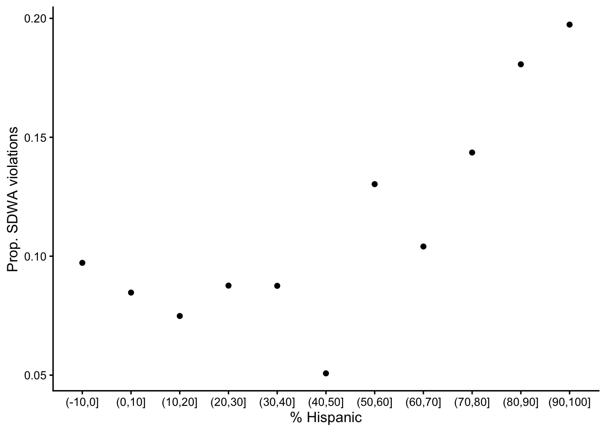
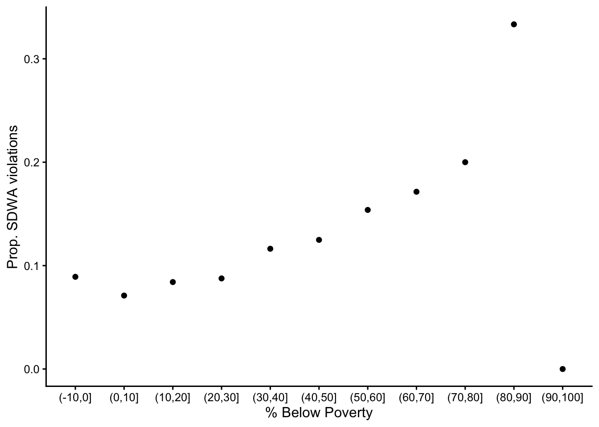
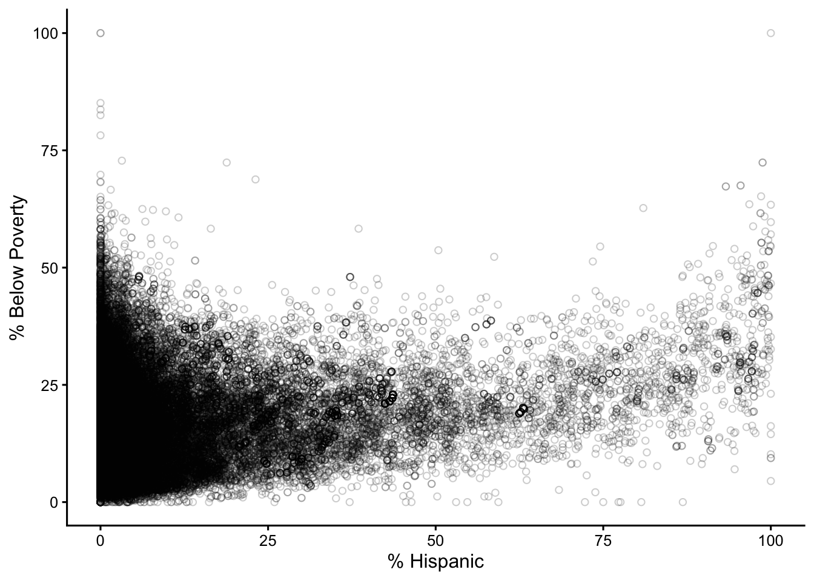
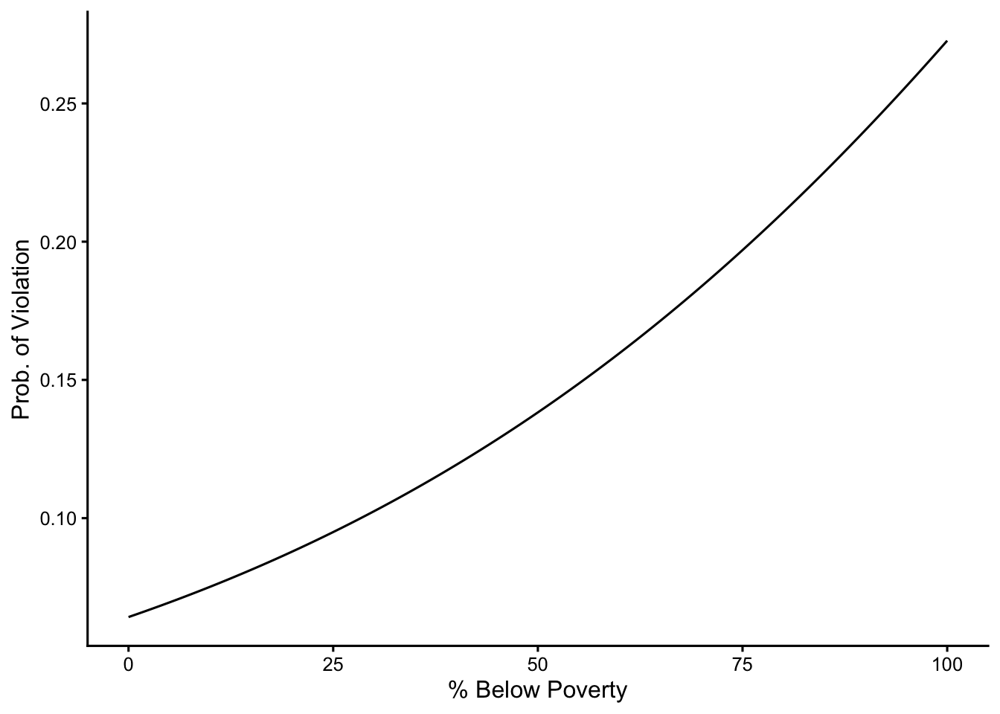
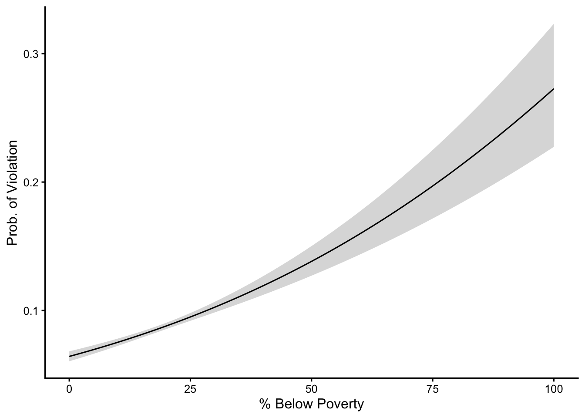
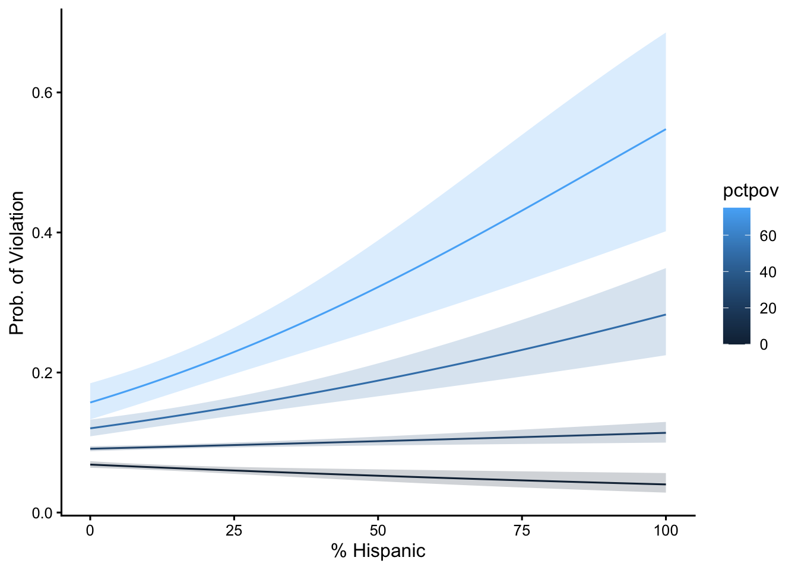

library(tidyverse)
theme_set(theme_classic(12))
set.seed(123)Learning objectives
In today’s lab you will…
- Fit logistic regression models to binary (0/1, no/yes) outcomes
- Interpret coefficients
- Visualize predictions
Complete sections Logistic model notation and R code and Read and explore the data before class.
Logistic model notation and R code
In statistical notation, logistic models take the form:
\[ \begin{align} \text{BinaryOutcome} &\sim Binomial(1, p) \\ logit(p) &= \beta_0 + \beta_1 \text{Predictor} \end{align} \]
In R, you can fit a logistic model like this:
logistic_model <- glm(binary_outcome ~ predictor,
data = my_data,
family = binomial(link = "logit"))In both the notation and code above, identify the:
Response family
Binomial,binomialLink function
logit,link = "logit"Response
BinaryOutcome,binary_outcomePredictor
Predictor,predictor
Read and explore the data
Read the dataset in drinking_water.csv.
drinking_water <- read_csv("data/drinking_water.csv",
show_col_types = FALSE)Describe what you think each of the columns represents.
| Column | Meaning |
|---|---|
pwsid |
ID of the public water system |
pwsname |
Name of the public water system |
pctpov |
Percent of the district under the poverty line |
pcthisp |
Percent of the district that is Hispanic |
health |
Count of SDWA violations |
medianincomehouse |
Median household income in the district |
violation |
Whether or not the district had a SDWA violation (binary) |
pcthisp_bin |
pcthisp, binned to 10% intervals |
pctpov_bin |
pctpov, binned to 10% intervals |
Create three figures summarizing the relationships between race, class, and SDWA violations.
Figure 1: A scatter plot showing the proportion of districts with SDWA violations in each percent Hispanic bin.
Figure 2: A scatter plot showing the proportion of districts with SDWA violations in each percent below-poverty bin.
Figure 3: A scatter plot showing the correlation between percent Hispanic and percent below-poverty at the district level.
drinking_water %>%
group_by(pcthisp_bin) %>%
summarize(prop_violation = mean(violation)) %>%
ggplot(aes(pcthisp_bin, prop_violation)) +
geom_point() +
labs(x = "% Hispanic",
y = "Prop. SDWA violations")
drinking_water %>%
group_by(pctpov_bin) %>%
summarize(prop_violation = mean(violation)) %>%
ggplot(aes(pctpov_bin, prop_violation)) +
geom_point() +
labs(x = "% Below Poverty",
y = "Prop. SDWA violations")
ggplot(drinking_water, aes(pcthisp, pctpov)) +
geom_point(shape = 21, alpha = 0.2) +
labs(x = "% Hispanic",
y = "% Below Poverty")


Fit and interpret model
Our question is:
How are SDWA violations distributed among communities by class and race?
Let’s begin by investigating class in isolation. Fit a logistic model to see how violation responds to pctpov.
class_model <- glm(violation ~ pctpov,
drinking_water,
family = binomial(link = "logit"))Just as we did with linear regression, you can inspect coefficient estimates, p-values, and confidence intervals using summary() and confint().
What is the best estimate for the % Below Poverty coefficient?
coef(class_model)["pctpov"] pctpov
0.01697973 Is the coefficient significantly different than 0? Assume critical threshold of 0.05.
summary(class_model)$coefficients["pctpov", 4] < 0.05[1] TRUEWhat is the 95% CI for the coefficient?
confint(class_model)["pctpov", ]Waiting for profiling to be done... 2.5 % 97.5 %
0.01400774 0.01993638 Based on the sign, what is the relationship between class and SDWA violations?
Probability of SDWA violation increases with the percentage of households below the poverty line.
Make predictions
Interpreting the coefficients directly is pretty difficult with logistic regression! What is the difference between a coefficient of 0.1 and 0.2? Rather than interpreting the coefficient directly, it’s often easier to compare predictions.
Once you have a model, you can make predictions using predict(). When calling predict(), the following parameters are important:
objectThe model you want to generate predictions fromnewdataA data frame of predictors your want predictions fortypeDo you want predictions on the link or response scale? By default,predict()shows the value of \(logit(p) = \beta_0 + \beta_1 x\) (i.e., link-scale). To get the predicted probability (i.e., response-scale) settypeto “response”.se.fitIfse.fitisTRUE,predict()will calculate the confidence interval of the response on the link scale. You can use that to get the confidence interval of \(p\). That will make a ribbon, similar to the confidence interval of \(\mu\) you saw in linear regression.
Here’s how to generate predictions (with CI) for a single predictor.
Tip
I use expand_grid() instead of tibble() when making the data frame of predictors because it gives you every combination of the values in the columns. That will be important when you have more than one predictor!
# The predicted best estimates for p
pred_grid <- expand_grid(pctpov = 0:100)
class_model_pred <- pred_grid %>%
mutate(p = predict(class_model,
newdata = pred_grid,
type = "response"))ggplot(class_model_pred, aes(pctpov, p)) +
geom_line() +
labs(x = "% Below Poverty",
y = "Prob. of Violation")
That was just the best estimate. The following code adds the 95% CI for \(p\). It uses the inverse link function to go from link-scale to response-scale.
Caution
When constructing the 95% CI for \(p\), one thing remains the same and one thing has changed from constructing the 95% CI for \(\mu\).
What remains the same: the sampling distribution is normal, so once you have the standard error you can use qnorm() to get the 2.5% and 97.5% quantiles.
What’s different: the sampling distribution exists on the link scale. In other words, the standard error is \(SE(logit(p))\) rather than \(SE(p)\). So you have to get the best estimate and standard error on the link scale, then invert the link function to get back to \(p\).
class_model_se <- predict(class_model,
newdata = pred_grid,
# Note the link scale
type = "link",
# Get the SE of the fit
se.fit = TRUE)
# Get the inverse link function to go from link to response
linkinv <- family(class_model)$linkinv
class_model_pred <- pred_grid %>%
mutate(
# Get logit(p) i.e. prediction on link scale
logit_p = class_model_se$fit,
# 95% CI on the link scale
logit_p_se = class_model_se$se.fit,
logit_p_lwr = qnorm(0.025, mean = logit_p, sd = logit_p_se),
logit_p_upr = qnorm(0.975, mean = logit_p, sd = logit_p_se),
# Invert to get probability i.e. response scale
p = linkinv(logit_p),
p_lwr = linkinv(logit_p_lwr),
p_upr = linkinv(logit_p_upr)
)And here’s the fit with the 95% CI presented as the familiar ribbon.
ggplot(class_model_pred, aes(pctpov, p)) +
geom_ribbon(aes(ymin = p_lwr, ymax = p_upr), alpha = 0.2) +
geom_line() +
labs(x = "% Below Poverty",
y = "Prob. of Violation")
What is the probability of a SDWA violation in a district where 5% of households are below the poverty line? When 50% are? Show the best estimate and 95% CI.
filter(class_model_pred, pctpov %in% c(5, 50)) %>%
select(p, p_lwr, p_upr)# A tibble: 2 × 3
p p_lwr p_upr
<dbl> <dbl> <dbl>
1 0.0695 0.0663 0.0729
2 0.138 0.127 0.150 Your turn
Switzer and Teodoro demonstrated that the interaction between race and class is important for understanding the environmental justice dimensions of drinking water. You’ll investigate that here through the following steps.
- Create a new model with an interaction term between
pctpovandpcthisp. - Use the summary and confidence intervals to answer the following questions:
What is the 95% CI for the % Hispanic coefficient?
Is the interaction between class and race significantly different than 0? - Create a new predictor data frame with combinations of both predictors.
- Generate predictions, including both the best estimate and 95% CI.
- Plot the predictions. In your plot, put
pcthispon the x-axis and probability of SDWA violations on the y-axis. Indicatepctpovusing color and fill. To make this work, you’ll have to filter your predictions to a few levels ofpctpov(e.g., 0, 25, 50, and 75).
ej_model <- glm(violation ~ pcthisp * pctpov,
drinking_water,
family = binomial(link = "logit"))
summary(ej_model) # interaction term p-value <0.0001, significant
Call:
glm(formula = violation ~ pcthisp * pctpov, family = binomial(link = "logit"),
data = drinking_water)
Coefficients:
Estimate Std. Error z value Pr(>|z|)
(Intercept) -2.610e+00 3.787e-02 -68.917 < 2e-16 ***
pcthisp -5.636e-03 1.976e-03 -2.853 0.00433 **
pctpov 1.241e-02 1.734e-03 7.154 8.44e-13 ***
pcthisp:pctpov 3.246e-04 6.696e-05 4.847 1.25e-06 ***
---
Signif. codes: 0 '***' 0.001 '**' 0.01 '*' 0.05 '.' 0.1 ' ' 1
(Dispersion parameter for binomial family taken to be 1)
Null deviance: 30509 on 52179 degrees of freedom
Residual deviance: 30353 on 52176 degrees of freedom
AIC: 30361
Number of Fisher Scoring iterations: 5confint(ej_model) # 0.00019 - 0.00046Waiting for profiling to be done... 2.5 % 97.5 %
(Intercept) -2.6846479109 -2.5361814958
pcthisp -0.0095294052 -0.0017824730
pctpov 0.0089973881 0.0157956929
pcthisp:pctpov 0.0001928585 0.0004555946pred_grid <- expand_grid(pctpov = 0:100,
pcthisp = 0:100)
ej_model_se <- predict(ej_model,
newdata = pred_grid,
# Note the link scale
type = "link",
# Get the SE of the fit
se.fit = TRUE)
# Get the inverse link function to go from link to response
linkinv <- family(class_model)$linkinv
ej_model_pred <- pred_grid %>%
mutate(
# Get logit(p) i.e. prediction on link scale
logit_p = ej_model_se$fit,
# +/- 1.96 SEs gives you the 95% CI on the link scale
logit_p_se = ej_model_se$se.fit,
logit_p_lwr = logit_p - 1.96 * logit_p_se,
logit_p_upr = logit_p + 1.96 * logit_p_se,
# Invert to get probability i.e. response scale
p = linkinv(logit_p),
p_lwr = linkinv(logit_p_lwr),
p_upr = linkinv(logit_p_upr)
)
filter(ej_model_pred, pctpov %in% c(0, 25, 50, 75)) %>%
ggplot(aes(x = pcthisp, y = p, group = pctpov)) +
geom_ribbon(aes(ymin = p_lwr, ymax = p_upr, fill = pctpov),
alpha = 0.2) +
geom_line(aes(color = pctpov)) +
labs(x = "% Hispanic",
y = "Prob. of Violation")
The coefficient for an interaction term in a logistic regression model is very difficult to interpret on its own! But that value has important consequences for the lives of millions of people. Predictions are usually more straightforward to interpret than coefficients. Use your figure and the outputs of summary() and confint() to reflect on the following prompt. Reply to the corresponding thread on Slack with your reflection to get 1 token.
In plain language, what is the relationship between race, class, and SDWA violations? Which communities face the greatest risks associated with drinking water? How would you use the statistical outputs (model summary, prediction figure) to describe that risk quantitatively? How could those statistical outputs be misinterpreted?